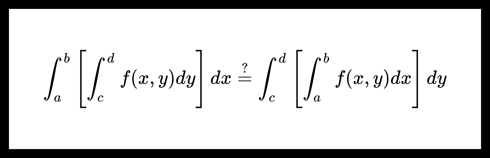

Перестановка собственных интегрирований.
Теорема. О перестановке собственных интегрирований.
Пусть f(x,y):[a,b]×[c,d]→R непрерывна на множестве [a,b]×[c,d].
Тогда
∫ab[∫cdf(x,y)dy]dx=∫cd[∫abf(x,y)dx]dy.
Доказательство:
Введем обозначения:
I(ξ)=∫ab[∫cξf(x,y)dy]dx; J(ξ)=∫cξ[∫abf(x,y)dx]dy;
φ(x,ξ)=∫cξf(x,y)dy.
Шаг 1. Покажем, что ∀ξ∈[c,d] dξdI(ξ)=dξdJ(ξ).
-
По теореме о функции переменного верхнего предела
∃ dξdJ(ξ)=dξd∫cξ[∫abf(x,y)dx]dy=∫abf(x,ξ)dx.
-
Заметим, что
∃dξdφ(x,ξ)=dξd∫cξf(x,y)dy=f(x,ξ),
где f(x,ξ) непрерывна на [a,b]×[c,d] (по условию теоремы).
Также ∀ξ∈[c,d] φ(x,ξ) непрерывна по x на [a,b].
Тогда по теореме о дифференцировании собственных интегралов с параметрами
∃dξdI(ξ)=dξd∫abφ(x,ξ)dx=∫abdξdφ(x,ξ)dx=
=∫abf(x,ξ)dx.
Получим, что dξdI(ξ)=∫abf(x,ξ)dx=dξdJ(ξ).
Шаг 2. Докажем теорему, показав, что I(d)=J(d).
Из утверждения, доказанного в шаге 1, следует, что
∃C∈R ∀ξ[c,d] I(ξ)=J(ξ)+C.
Убедимся, что C=0:
I(c)=∫ab=0∫ccf(x,y)dydx=0,
J(c)==0∫cc[∫abf(x,y)dx]dy=0,
поэтому
C=I(c)−J(c)=0.
Тогда при ξ=d
I(d)=J(d)
или
∫ab[∫cdf(x,y)dy]dx=∫cd[∫abf(x,y)dx]dy.